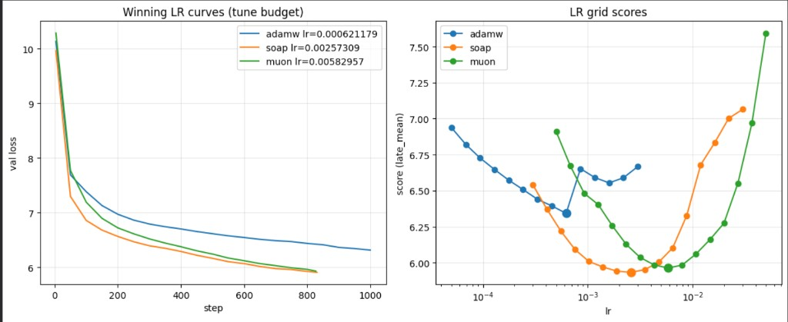
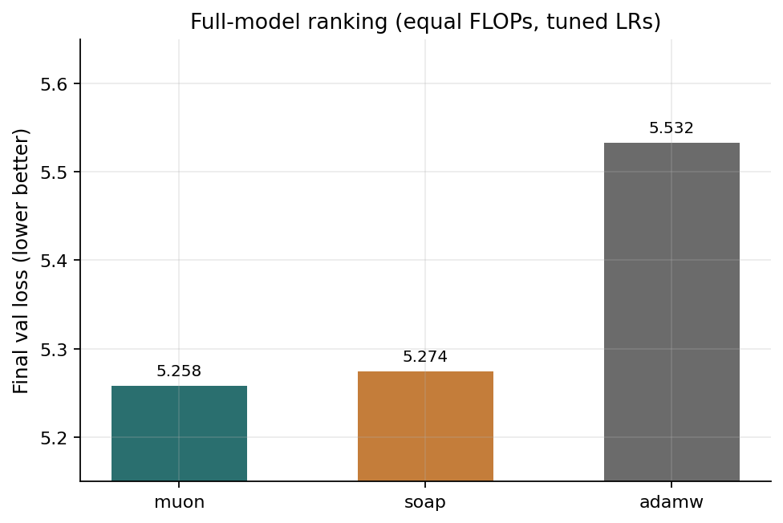
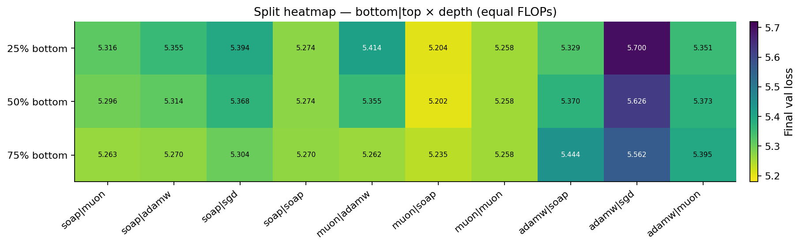
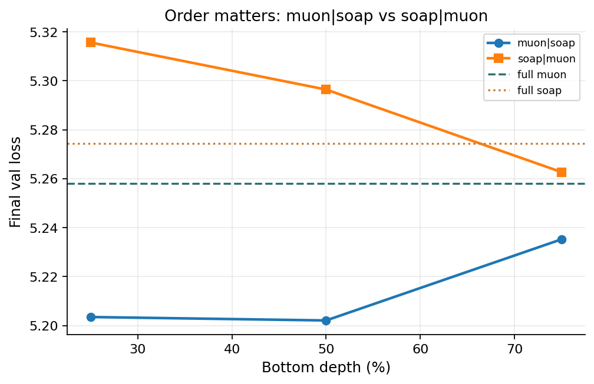

Depth-split optimizers on FineWeb
A small experiment: does it help to use different optimizers on different parts of a model?
Code and notebooks: https://github.com/vaibhavgurunathan/depth-split-optimizers
TL;DR
- At equal compute (FLOPs), Muon and SOAP are about tied, and both clearly beat AdamW. Muon got 5.258 val loss, SOAP 5.274, AdamW 5.533.
- Most of the mixed-optimizer splits I tried were worse than just using one optimizer everywhere.
- The one split that did better was Muon on the bottom of the model and SOAP on the top. It beat full Muon by 0.056. But that is a single seed, so I'm treating it as a hint and not a result.
- This is a tiny model (about 18M params) on a single T4. I'm not claiming any of this carries over to bigger models.
Why I ran this
Usually you pick one optimizer and use it for the whole model. I wanted to know whether early and late layers might want different kinds of updates, and whether the expensive optimizers are still worth it once you count what they cost.
My guess going in was that you'd want a heavy, expensive update on the early layers and something cheaper on the later layers, so you could afford more steps. That guess turned out to be mostly untested, and what I did see pointed somewhere else. More on that below.
I still think the question is reasonable. One optimizer everywhere is a convenience, not something we have evidence for. Layers do different jobs. The embedding is not a residual block, and the last block is not the first. It would be surprising if the same update rule was best for all of them, at the same price, on every budget.
This run is too small and too embed-heavy to settle that. If I were actually chasing the question I would not stop at three cuts on a 6-layer net. I would try more depths, including cuts that are not symmetric, and I would try more pairs than Muon, SOAP, AdamW, and a leftover SGD. I would also want a model where the embedding is not most of the parameters, so bottom versus top is actually early layers versus late layers. The point of this write-up is not that the idea failed. It is that I barely tested it, and the little I saw was not the story I expected.
What I trust, and what I don't
The part I trust: at equal FLOPs, with the optimizer's own cost counted in the budget, Muon and SOAP are close to each other and both beat AdamW by a clear margin (about 0.26 to 0.28 in val loss). Muon and SOAP themselves are only 0.016 apart, so calling them tied is the right read.
The part I don't trust yet: the Muon-bottom / SOAP-top result. It's one seed, and the gap (0.056) is small enough that I can't say it's outside normal run-to-run noise. There are also two things in the setup, weight decay and learning rates, both explained below, that could be helping or hurting that 0.056. I wouldn't use them to talk the gap up or talk it down.
Because the model is so embedding-heavy, bottom mostly means the embedding plus a couple of blocks. So if the split really does something, the more likely story is which optimizer updates the embedding, not a deep early-versus-late-layers story.
Setup
Model: a small GPT with 6 layers, 4 heads, d = 256, sequence length 256, batch size 16, the GPT-2 tokenizer, and a tied embedding. About 17.7M unique parameters.
Training: constant learning rate, no schedule. Weight decay is 0.1 for AdamW and Muon, and 0.01 for SOAP. I did not sweep weight decay, so that difference is baked into every comparison involving SOAP.
Data: FineWeb-Edu sample-10BT, a 30M-token shard, with 50k tokens held out for validation.
Hardware: Colab T4, seed 42 for everything.
Compute budget: every run gets the same FLOP budget, which is the measured AdamW FLOPs per step times 5000. That's about 20M tokens if you're running AdamW. Forward pass, backward pass, and the optimizer update all count toward the budget.
One thing worth knowing: AdamW's fused kernels barely show up in the FLOP counter, so AdamW gets its full 5000 steps and the heavier optimizers only get about 4100. That tilts the comparison toward AdamW, and it still lost.
The three optimizers:
- AdamW is the standard first-order baseline.
- SOAP is Shampoo-style. It's slower per step, and it's the kind of heavy update I thought might help most on the early layers.
- Muon orthogonalizes the momentum with Newton-Schulz on the 2D weights, and uses AdamW on everything else.
In this run Muon and SOAP each spent about 17% of the budget on the update. So this isn't really a cheap-versus-expensive comparison. It's two similarly expensive update rules, placed on different parts of the network.
I also tried SGD on the top of a few splits, as a quick check of the cheap late layers idea. I used learning rate 0.1 and didn't retune it, so I wouldn't read much into those runs beyond the fact that an untuned cheap top did not help.
How the model is split: by depth. Bottom is the token embedding (tied to the output layer), the position embedding, and blocks [0, split_at). Top is the remaining blocks plus the final LayerNorm. I cut at 25%, 50%, and 75% of the 6 blocks, which is split_at = 2, 3, and 5. A split is written bottom|top, so muon|soap means Muon on the bottom and SOAP on the top.
Picking learning rates
Before comparing anything I needed a fair learning rate for each optimizer on this model and data. Otherwise saying Muon beat AdamW could just mean I picked a bad AdamW rate.
I ran a separate sweep for each optimizer, on the same model and data but with a shorter budget (AdamW FLOPs per step times 1000, so AdamW trains about 1000 steps and the others somewhat fewer). That was 46 trials in total:
- 14 AdamW rates, from 5×10⁻⁵ to 3×10⁻³
- 16 SOAP rates, from 3×10⁻⁴ to 3×10⁻²
- 16 Muon rates, from 5×10⁻⁴ to 5×10⁻²
Each trial was scored by the mean of its last few validation points, not by its best spike. The winning rate for each optimizer landed inside its grid, not on an edge.
| Optimizer | Locked LR |
|---|---|
| AdamW | 6.21×10⁻⁴ |
| SOAP | 2.57×10⁻³ |
| Muon | 5.83×10⁻³ |
These three numbers were then frozen. Every split reuses them, with no pair-specific tuning.

Results
1) Each optimizer on the full model, full budget
| Optimizer | Val | Steps | Optimizer FLOP share |
|---|---|---|---|
| Muon | 5.258 | 4133 | 17.4% |
| SOAP | 5.274 | 4151 | 16.8% |
| AdamW | 5.533 | 5000 | 0% |
Paying roughly 17% of the budget for a better update still beat free AdamW, even though AdamW got more steps. This full-model ranking is the part of the report I'd stand behind. It doesn't tell us where in the network each update should go.

2) The splits
I ran ten bottom|top pairs at three cuts, which is 33 trials once you include the three full-model runs.
The best run was Muon on the bottom and SOAP on the top, cut at 50%, with a val loss of 5.202. The 25% cut was nearly the same at 5.204, and the 75% cut gave 5.235. Same pairing at every cut, one seed, not three independent trials. At 75%, Muon covers five of the six blocks, so the run starts to look like full Muon and the gap to it shrinks to 0.023.
Flipping the order (SOAP on the bottom, Muon on the top) was worse:
| Cut | muon|soap | soap|muon | full Muon | full SOAP |
|---|---|---|---|---|
| 25% | 5.204 | 5.316 | 5.258 | 5.274 |
| 50% | 5.202 | 5.296 | 5.258 | 5.274 |
| 75% | 5.235 | 5.263 | 5.258 | 5.274 |
soap|muon is worse than full SOAP at 25% and 50%. At 75% it slips just under SOAP (5.263 vs 5.274) but not under Muon. Only Muon-bottom / SOAP-top beats both full-model runs, and that's the single-seed result I'm cautious about.


3) Controls
I ran muon|muon and soap|soap as sanity checks. If cutting the model without changing the update changed the loss, the splitting itself would be the problem.
- muon|muon gave 5.258 at every cut, identical to full Muon.
- soap|soap gave 5.274 at 25% and 50%, and 5.270 at 75%.
So the splitting machinery isn't adding any effect by itself.
4) The cheap late layers idea
As far as I tested it, it lost. soap|sgd scored 5.394 at 25%, 5.368 at 50%, and 5.304 at 75%, worse than full SOAP at every cut. Any split with AdamW on the bottom was also worse.
But I didn't really give this idea a fair shot. Muon and SOAP cost about the same, so there was no cheap heavy-optimizer option, and the one cheap top I tried was untuned SGD.
What I'd actually claim
- Muon is about even with SOAP, and both clearly beat AdamW at equal FLOPs on this model.
- Most of the mixed splits did worse than a single optimizer used everywhere.
- If you do mix these two, the order doesn't look cosmetic. Muon on the bottom did better than Muon on the top.
What I would not claim is that 0.056 is a real improvement. I'd call it a hint worth following up.
Limitations
- One seed. I have no estimate of run-to-run noise, so I can't say whether a 0.056 gap is outside it. This is the biggest caveat.
- Weight decay isn't matched. SOAP used 0.01 and the others used 0.1. That affects the Muon-versus-SOAP comparison, and it also affects every mixed split, since the two optimizers are on different parts of the model with different weight decay.
- Learning rates were tuned on the full model at a shorter budget (about a fifth as long). A rate that works well at about 1000 AdamW-equivalent steps may not be the best at 5000. And a rate tuned for an optimizer on the whole model may not be best when it only handles part of the model.
- No learning rate schedule. I used a constant rate for everything, which may affect the optimizers differently.
- Lost learning curves. A Colab wipe deleted most of them, so the ranking is based on end-of-budget validation loss only. I can't tell whether muon|soap led the whole way or just won at the end.
- Small scale. About 18M params, 6 layers, one T4. The embedding makes up most of the parameters. I'm not claiming this transfers to something like a 7B model.
What's next
The next thing that would change this write-up is two more seeds each of full Muon and 50% muon|soap, with the learning curves logged, plus full SOAP and 50% soap|muon so I can see the noise on every config that matters. I would also check SOAP at weight decay 0.1, so the comparison isn't carrying that mismatch.
I would not grow this particular 10-pair grid on this 6-layer model. If the 0.056 disappears, the honest summary of this run is: Muon was a bit better than SOAP, both beat AdamW, and splitting did not clearly help.
That would still leave the original question open. I think people should be doing this, just not as a one-seed bake-off on an embed-heavy toy. More depth cuts, including ones that are not 25/50/75. More pairs, including ones where the two sides actually differ in cost. A deeper model, so bottom versus top is not mostly who owns the embedding. If the gap holds up here, the first thing I'd want to know is whether it is specifically Muon on the embedding. If it does not, I would still keep playing with the split, just at a scale where the question can actually fail.
Code
The final comparison is in final_LR_tuned_optimizers_by_depth.ipynb. The learning rate sweep is in verify_lrs_optimizers.ipynb.